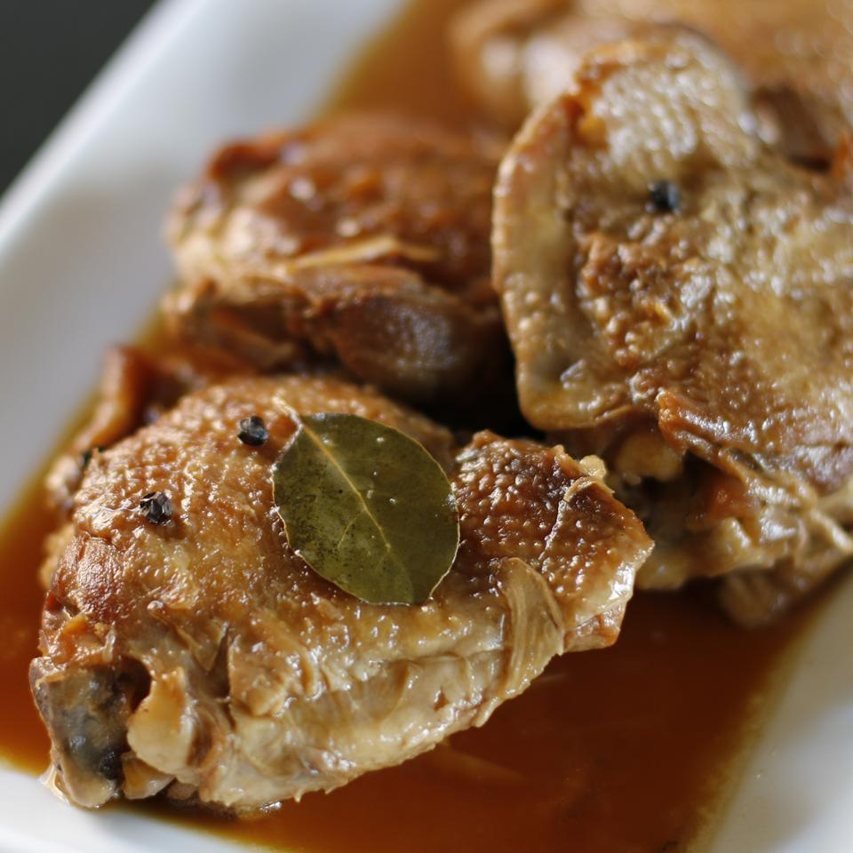

Preparation time: 10 mins
Cooking time: 1 hr 10 mins
Total time: 1 hr 20 mins
Servings: 8
Lolah's Chicken Adobo
By foodelicious
2

Description
My Filipino Mom taught me how to make this traditional dish following the recipe her mother taught her. And though I've made a couple of changes, I guarantee they're Mom-approved. 'Lolah' is 'Grandma' in the Philippines, in case you were wondering. Serve over steamed rice.
Ingredients
- 3 tablespoons vegetable oil
- 3 pounds boneless, skinless chicken thighs, rinsed and patted dry
- 6 cloves garlic, peeled and thinly sliced
- ½ cup soy sauce
- ½ cup apple cider vinegar
- ½ cup water
- 2 tablespoons pickling spice, wrapped in cheesecloth
Directions
- Heat oil in a large pot over medium heat until oil is shimmering. Cook garlic in oil for no more than 30 seconds. Add all of the chicken to the pot; cook, stirring frequently, until chicken is white all over. Do not brown.
- Pour in soy sauce, vinegar, and water, and add the pickling spice. Make sure the spice ball is submerged. Bring to a boil, reduce heat to simmer, and place lid on pot so that some steam can escape. Simmer for 1 hour, or until chicken is very tender.